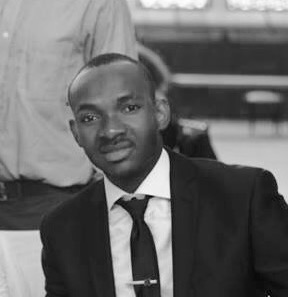

About Me

Originally from Burkina Faso, a small country located in west Africa, I moved to the US in 2012 after completing my high school degree. Coming to America, I did not know any English but I was, as always eager to learn and in three months I was able to stand in front of a class to give a speech about my country.
I spent my first three months in the US in a college town called Eugene, in Oregon. Then I moved to New York where I spent the next seven years going to school. I first studied English for another three months, then I started my academic program in Electronics engineering Technology at the city university of New York in the Bronx. I graduated in May 2015 and pursued a Bachelor in electrical Engineering at the State University of New York at New Paltz. I graduated from New Paltz in May 2019. One month later, I decided to leave New York and adventure in the west coast precisely in Seattle, WA.
Why Seattle? A simple google search showed that Seattle is one of the fast growing city in the US with lots of tech Jobs. Plus I have visited the city before moving to New York and also in spring 2016 and I fell in love with the nice views, the nice weather and the modern houses. So, Without hesitation, I packed my staff and took off.
Once in Seattle, I found out that most of the high paying jobs are in the programming world, plus I have always wanted to learn how to code. So I decided to go for a coding Bootcamp and the only one flexible with my schedule was the UW-Bootcamp.
I hope to get out of this program competitively ready to embrace the job market.